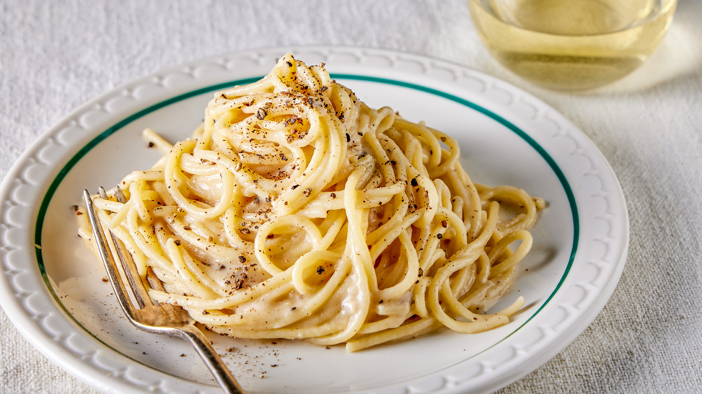

Cacio e Pepe

Description
Cacio e Pepe is an irresistible Roman classic, combining perfectly al dente pasta with a creamy, salty Pecorino Romano sauce and the bold kick of freshly ground black pepper.
This simple yet luxurious dish delivers rich, cheesy warmth and a peppery bite that will leave you craving more.
Ingredients : 4 Servings
- 400g spaghetti
- 150g Pecorino Romano cheese, finely grated
- 2 tablespoons freshly ground black pepper
- Salt (for pasta water)
- 2 tablespoons olive oil (optional)
Steps
- Boil spaghetti in salted water until al dente. Save some pasta water.
- Heat black pepper in a pan, then add a little pasta water.
- Mix Pecorino with hot pasta water to form a creamy sauce.
- Toss the pasta in the pan with pepper and cheese sauce.
- Plate, top with extra Pecorino and pepper, and enjoy!